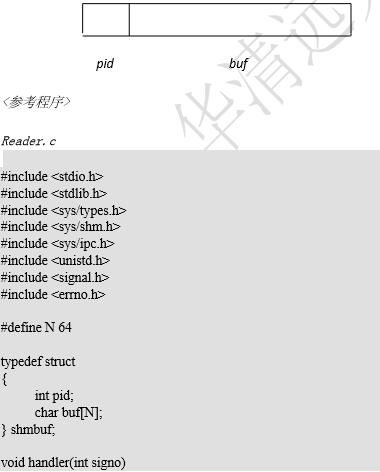
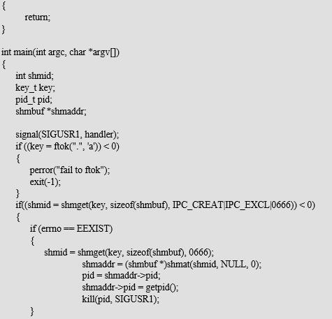
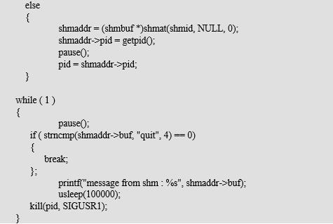
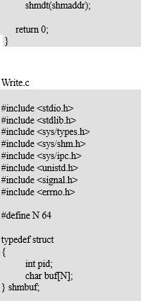
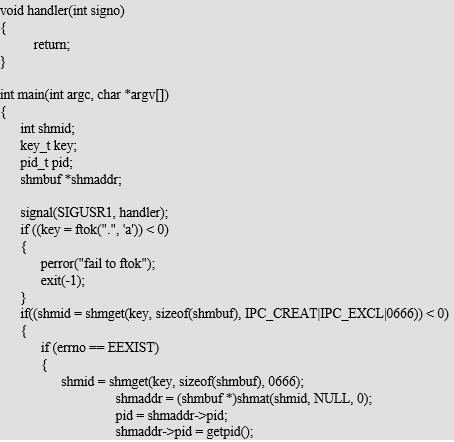
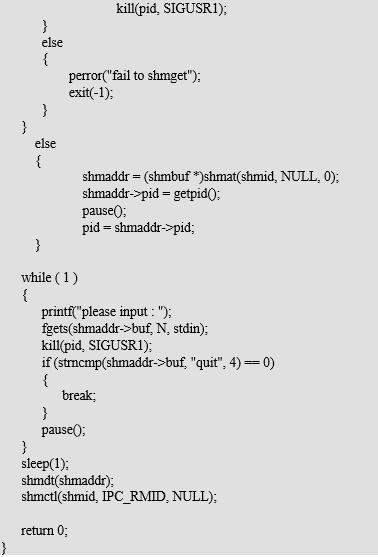

1、掌握共享内存的创建和读写方式
2、熟悉 UNIX/LINUX 支持的共享内存通信方式
reader 和 writer 两个进程通过共享内存交换数据。writer 从标准输入读入字符串写入共享内存，reader 把共享内存里的字符串打印到标准输出。
reader 和 writer 通过信号实现同步
思路：
1. reader 和 writer 通过信号通信必须获取对方的进程号，可利用共享内存保存双方的进程号
2. reader 和 writer 运行的顺序不确定，可约定先运行的进程创建共享内存并初始化。





